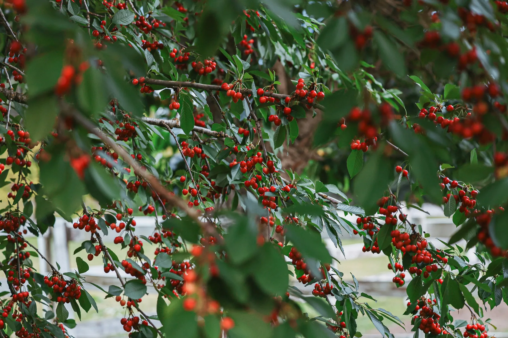
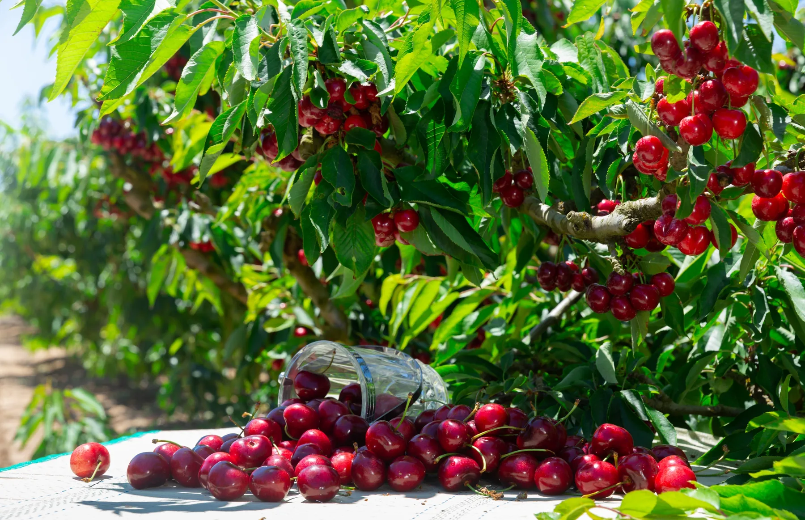
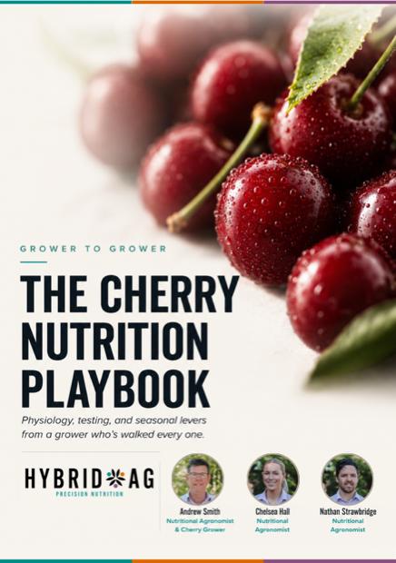
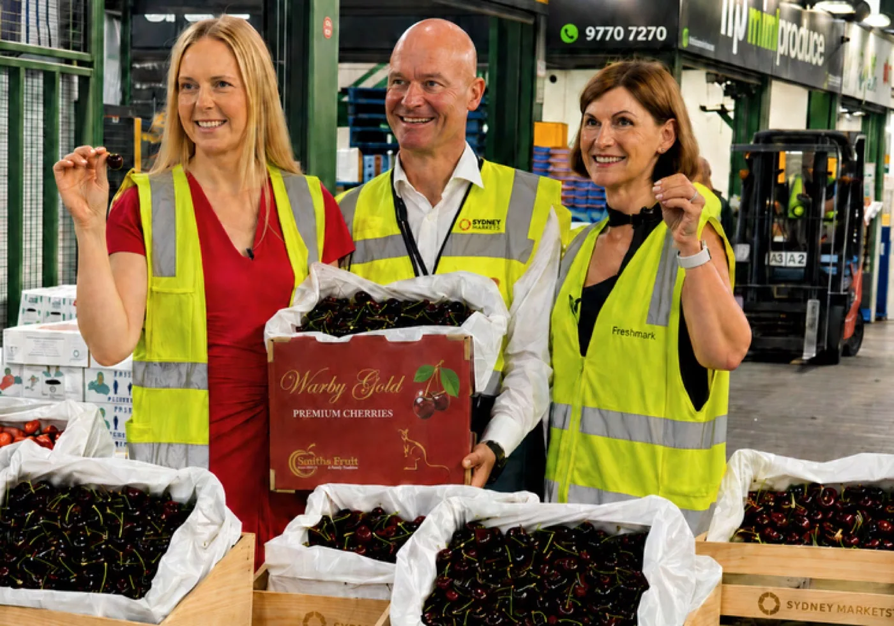

Review the harvest.
Review fruit, pack-out and block performance, then consider the reserves and root-zone conditions before the next season.

Explore a sample cherry nutrition program, from post-harvest and dormancy through flowering, set, fruit development and harvest. This is a review draft, not application guidance. Products, rates and timing need technical confirmation for your block before use.
Growth stages help organise the program, but the recommendations depend on the block.
Variety, crop load, soil, water, plant results, recent conditions, production target and previous response all inform the recommendations at each stage. Exact products, rates and timing are confirmed only after the evidence is reviewed.
This is a review draft, not approved application guidance. Product selections, rates and timing require technical confirmation before use.
Review draft, not a block prescription. Quantities retain the original L notation; the application basis needs confirmation before use. Product selections, rates and timing require technical confirmation against current test data, crop stage and seasonal conditions. Products shown at the same stage are not necessarily a tank mix.
The tree’s requirements change as it develops. The program considers the current stage alongside what has happened earlier in the season.
Review fruit, pack-out and block performance, then consider the reserves and root-zone conditions before the next season.
Review the season’s history, soil, canopy and tree condition when considering reserves and work for the next season.
Interpret early growth and flowering against stored reserves, weather, crop potential and the block’s current evidence.
Review set, early fruit development and plant results during this stage.
Read water, canopy, uptake and crop load against fruit development and the specification the block is targeting.
Use fruit condition, pack-out, grade and harvest data to inform planning for the next season.

The team reviews tests with the block’s history and field observations to assess what needs attention.
The program is designed to be used in the block and revisited with the team. It explains the recommendations, the information behind them and what needs checking next.
An initial assessment of the block, using the available soil, water, plant and fruit results and the issue being investigated.
The priorities for each stage, including what needs attention now and what can wait.
The recommended product, form, placement and timing, taking account of the block, water, equipment and practical limits.
The crop observations or repeat samples used to assess the response and review the recommendations.
These questions help the team relate the recommendations to the block and the season.
Variety, stage, crop load, conditions and the evidence available today.
Previous results, changes through the season, applications and crop response.
What needs attention now, what can wait and what needs checking.
The playbook explains cherry growth and testing through the season, providing background for nutrition decisions at each stage.
Review draft: visitors will provide their contact details to receive this booklet when the website launches. Downloads remain open here while the website is being reviewed.


Andrew Smith leads Hybrid-Ag’s cherry work with both grower and agronomic experience. The wider team reviews block observations and tests alongside seasonal conditions and fruit quality after harvest.
Meet Andrew Smith